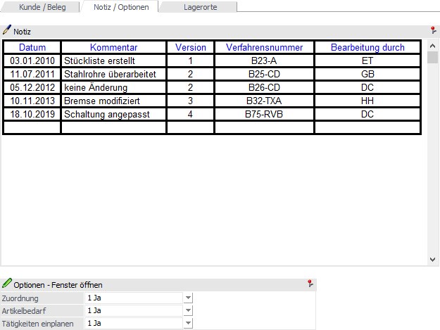
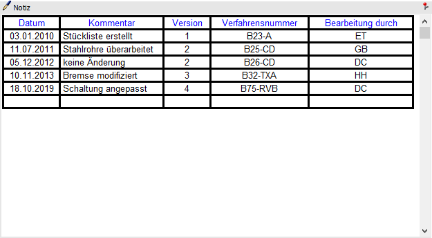
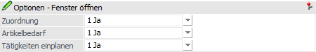

Im Register "Notiz / Optionen" der Produktionsvorbereitung kann u.a. eine Produktionsnotiz hinterlegt werden.

Folgende Eingabefelder und Einstellungen stehen zur Verfügung:
Notiz

An dieser Stelle kann ein beliebig langer Text zum Produktionsartikel bzw. zum Produktionsauftrag, welcher auch Formatierungen enthalten darf, erfasst werden. Der Text dient dabei entweder als reine Informationen z.B. bei der Auftragserfassung oder kann beispielsweise auf dem Arbeitsschein angedruckt werden.
Hinweis
Dieses Feld wird automatisch mit dem Inhalt des Felds "Notiz" aus dem Stücklistenstamm gefüllt.
Optionen - Fenster öffnen

Mit Hilfe der folgenden Einstellungen kann für den Produktionsauftrag eingestellt werden, ob die Fenster Zuordnung, Verfügbarkeitsliste bzw. Produktionsauftrag - Tätigkeiten einplanen bei der Anlage des Auftrags geöffnet werden.
Hinweis
Eine Steuerung der Einstellungen ist auch über den Informationsbereich des Registers Kunde / Beleg möglich.
Ø Zuordnung
Der Inhalt dieser Option ist abhängig von der Option "Zuordnungsfenster" aus den PPS-Parametern (Bereich ""Produktionsauftragsanlage"). Nur wenn dort "2 - nur im Fehlerfall" hinterlegt wurde, so kann an dieser Stelle eine Auswahl erfolgen.
ü 1 - Ja
Mit dieser Einstellung
wird das Fenster "Zuordnung" immer geöffnet, wenn der Produktionsartikel oder
eine der benötigten Komponenten mit Ident- bzw. Chargennummer geführt wird oder
eine sonstige Ausprägung (z.B. Farbausprägung) beinhaltet. Zusätzlich wird das
Fenster angezeigt, wenn ein Artikel mit Lagerortstruktur vorhanden ist.
Achtung
Die jeweiligen Aufteilungsoptionen müssen zumindest auf "kann erfolgen" gestellt sein. Ansonsten gäbe es in der Zuordnung nichts anzuzeigen, wodurch das Fenster auch nicht dargestellt wird.
Grundvoraussetzung für eine Darstellung der Ausprägungs- und / oder Lagerortartikel ist eine korrekte Einstellung der Ausprägungsoptionen. Dort muss für den jeweiligen Typ zumindest "2 - kann erfolgen" hinterlegt worden sein (nähere Informationen entnehmen Sie bitte dem Kapitel "Aufteilungsoptionen").
ü 0 - Nein
Mit dieser Auswahl
wird das Fenster "Verfügbarkeitsliste" während der Anlage des
Produktionsauftrags nicht geöffnet.
Achtung
Auch wenn in den Aufteilungsoptionen das Ausprägen bzw. das Erfassen von Lagerorten auf "muss erfolgen" gestellt wurde, wird die Zuordnung bei "Nein" nicht geöffnet.
ü 2 - nur im Fehlerfall
Mit
dieser Einstellung wird das Fenster "Zuordnung" während der Anlage des
Produktionsauftrags nur dann geöffnet, wenn im Auftrag ein Artikel mit
Ausprägung (unausgeprägt) enthalten ist oder bei Lagerortartikel die
automatische Aufteilung keine passenden Lagerorte ermitteln konnte.
Achtung
Grundvoraussetzung für eine Darstellung der Ausprägungs- und / oder Lagerortartikel ist eine korrekte Einstellung der Ausprägungsoptionen. Dort muss für den jeweiligen Typ zumindest "2 - kann erfolgen" hinterlegt worden sein (nähere Informationen entnehmen Sie bitte dem Kapitel "Aufteilungsoptionen").
Ø Artikelbedarf
Wenn Option "Artikelverfügbarkeit prüfen" in den PPS-Parametern (Bereich "Produktionsauftragsanlage") aktiviert wurde, ist die Auswahl mit "Ja" vorbelegt und kann nicht geändert werden. Ansonsten wird "Nein" vorbelegt und kann editiert werden.
ü 1 - Ja
Mit dieser Einstellung
wird das Fenster "Verfügbarkeitsliste" während der Anlage des
Produktionsauftrags geöffnet.
ü 0 - Nein
Mit dieser Auswahl
wird das Fenster "Verfügbarkeitsliste" während der Anlage des
Produktionsauftrags nicht geöffnet.
ü 2 - nur im Fehlerfall
Mit
dieser Einstellung wird das Fenster "Verfügbarkeitsliste" während der Anlage des
Produktionsauftrags nur dann geöffnet, wenn die Verfügbarkeit bei den
Stücklistenteilen nicht ermittelt werden kann.
Ø Tätigkeiten einplanen
Wenn die Option "Tätigkeitenfenster nicht öffnen" in den FAKT-Parametern (Bereich "Belege / Stücklisten" "Einstellungen für Stücklisten) nicht aktiviert wurde, so ist die Auswahl mit "Ja" vorbelegt. Ansonsten wird "Nein" vorgeschlagen, wobei zur Auswahl immer die folgenden Möglichkeiten stehen:
ü Ja
Mit dieser Einstellung wird
Fenster "Tätigkeiten einplanen" während der Anlage des Produktionsauftrags
geöffnet.
ü Nein
Mit dieser Auswahl wird
Fenster "Tätigkeiten einplanen" während der Anlage des Produktionsauftrags nicht
geöffnet.
ü Nur im Fehlerfall
Mit dieser
Einstellung wird Fenster "Tätigkeiten einplanen " während der Anlage des
Produktionsauftrags nur dann geöffnet, wenn eine Tätigkeit nicht eingeplant
werden kann.